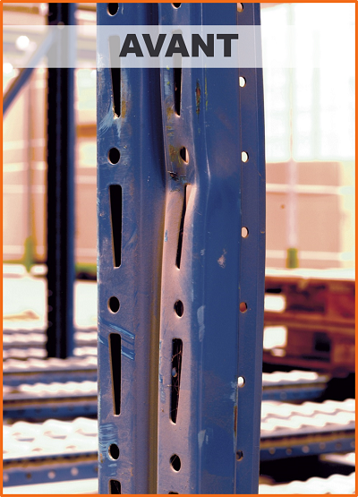

Le geste
Les accidents en réserve arrivent.
Parfois, l'appareil est un peu brusque, et sa puissance et son poids suffisent à endommager le montant des racks.
Parfois on manœuvre sans marge, ou trop près des lisses.
Parfois on touche juste un montant, même pas réellement fort.